下面是号称最好的50套WEB开发的图标。来源：链接
其它相关的一些文章
Sweetie – Cute and clear icons
famfamfam – Mini Icons
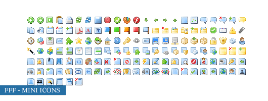
Vector Icon Set
Facebook UI Icon Set
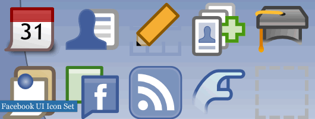
Fugue Icons
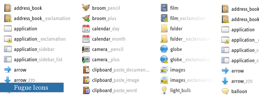
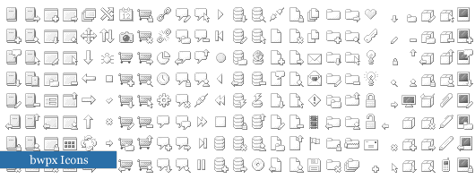
Sanscons Icon Set
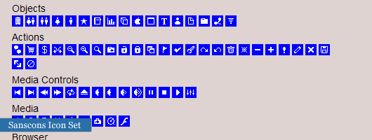
Diagona Icons
Milky Icon Set
Pixelicious Icon Set
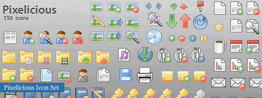
Xiao Icon Set
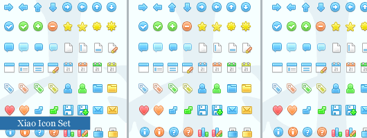
Mini Pixel Icons
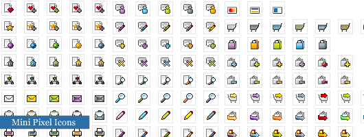
Function Icon Set
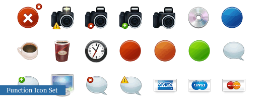
ASP.NET Icon Set
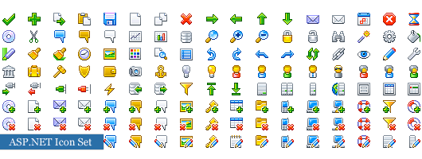
Light Icon Set
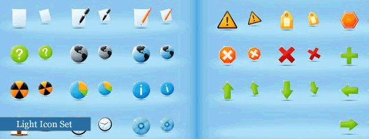
Liquidicity Icon Set
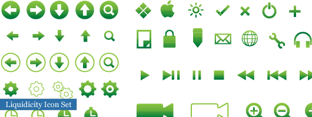
“sketch’d up!” Icon Set
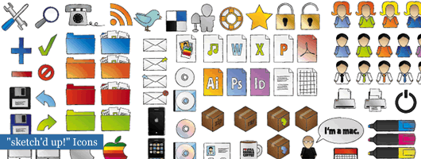
Ganato – Psd Icons
Two Tone Icon Set
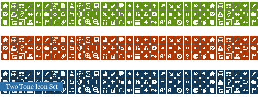
TwoTiny Icon Set
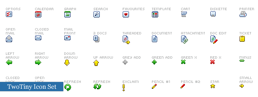
Web2.0 Icons Pack
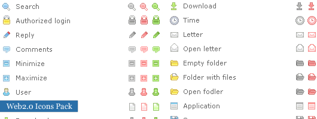
Proxal Icon Set v2
Brand Spanking New Icon Set
Perfect Blog Icons
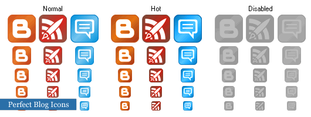
Web Application Icons
Irokez CMS Icon Set
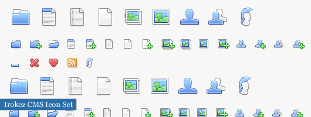
BacktoPixel Icon Set
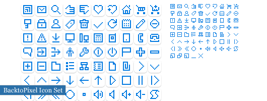
Sizcons – Random Jabber
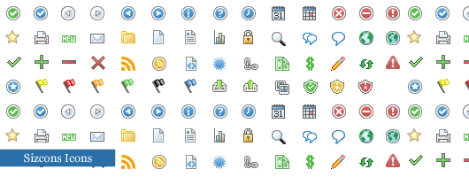
famfamfam – Silk Icons
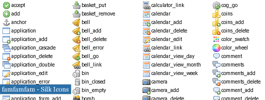
ExplodingBoy Pixel Icons
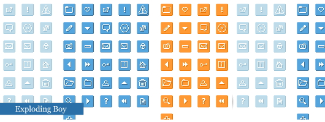
Greyscale Icon Development
File icons and Computer Icon Set
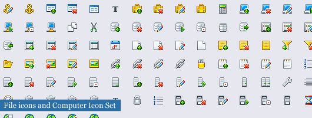
Small Arrow Icon Set
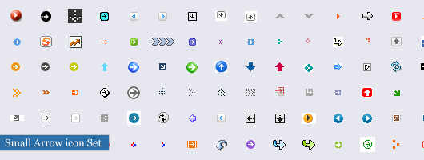
Minimal Icons
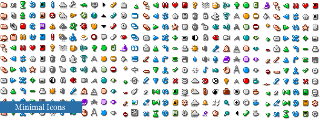
Markup Iconsets
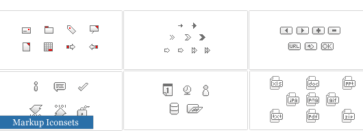
GraphicPUSH Blog Icons
Pixeley Icon Set
Drunkey Love
PIXELATED Icon Set
Weby Icons
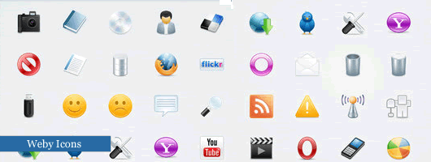
WebDev Icon Pack
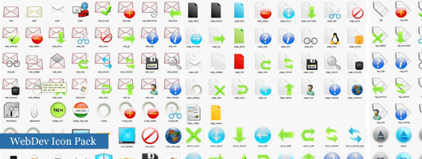
Stickers Icon Set
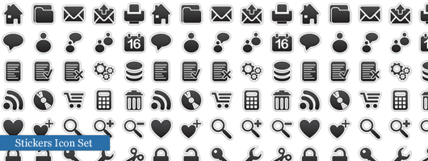
WYSIWYG Classic Icon Set
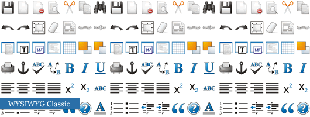
Vaga Icon Set
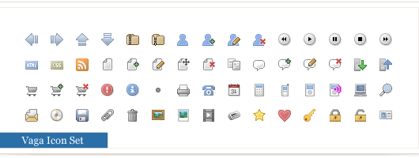
WIP – Web Iconset
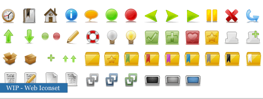
Free web development icons #1
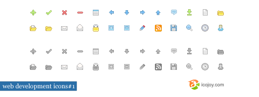
Free web development icons #2
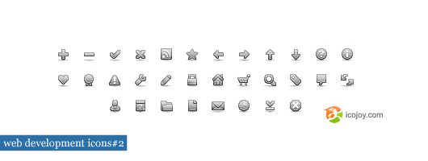
Free web development icons #3
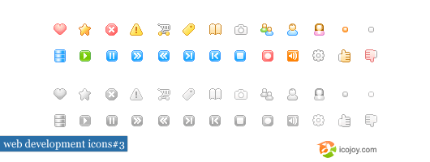
Black Icon Set
Open Clip Art Library
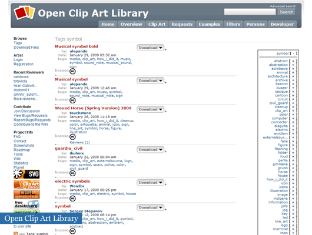
（转载本站文章请注明作者和出处 酷 壳 – CoolShell ，请勿用于任何商业用途）